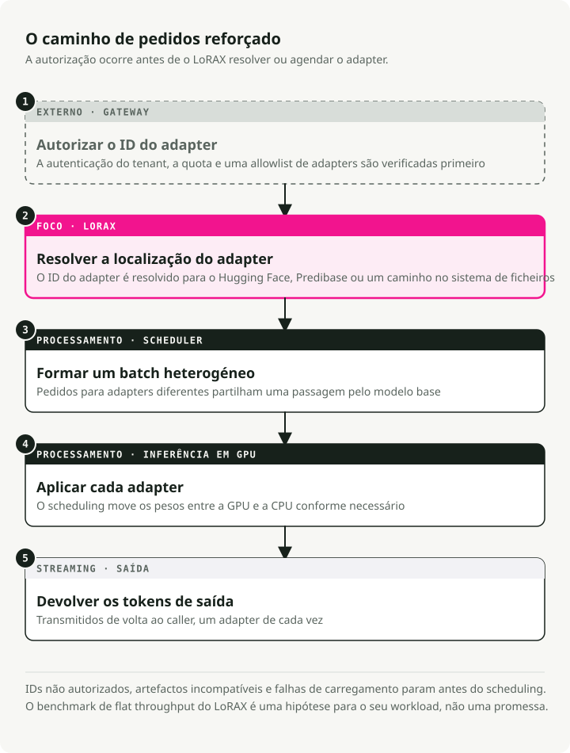
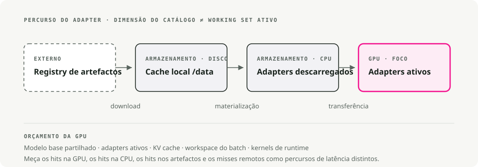

Tradução automática
Este artigo foi traduzido automaticamente a partir da versão original em inglês.
Guia de Serving com LoRAX: Milhares de Adaptadores LoRA em Kubernetes
Servir dezenas de modelos de linguagem de grande dimensão ajustados finamente costumava significar uma GPU por modelo. O LoRAX (LoRA eXchange) mantém um único modelo base em memória e faz hot-swap de adaptadores LoRA leves por pedido. O custo por token mantém-se praticamente estável à medida que adiciona fine-tunes.
Este guia cobre o que é LoRA, quando escolher LoRAX em vez de vLLM, como o implementar em Kubernetes com o Helm chart oficial e como chamar as APIs REST, Python e compatível com OpenAI.
Contexto: o que é LoRA?
Low-Rank Adaptation (LoRA) congela os pesos do modelo pré-treinado e injeta pequenas matrizes de decomposição de rank em cada camada Transformer. Em vez de voltar a treinar o modelo inteiro, treina um pequeno conjunto de "diffs" que capturam o novo comportamento.
Um fine-tune completo de um modelo 7B é um ficheiro com mais de 20GB. Um adaptador LoRA para o mesmo modelo ronda os 100MB. É esta diferença que torna o serving dinâmico possível: pode manter milhares de adaptadores em disco e carregar um para memória GPU em milissegundos.
O problema que o LoRAX resolve
O serving multi-modelo da forma tradicional é caro. Cada modelo ajustado finamente precisa da sua própria memória GPU, por isso servir 50 modelos específicos por cliente exige 50 deployments, ou pelo menos 50× a memória. O custo escala linearmente com cada nova variante.
O LoRAX é um projeto Apache 2.0 da Predibase. Estende o servidor Hugging Face Text Generation Inference com carregamento dinâmico de adaptadores, cache de pesos em múltiplos níveis e batching multi-adaptador. Em conjunto, isto permite servir centenas de adaptadores LoRA específicos por tenant numa única GPU da classe Ampere sem perder throughput nem latência.
O truque: o fine-tuning com LoRA produz pequenos pesos delta em vez de cópias completas do modelo. O LoRAX mantém apenas o modelo base residente na GPU e injeta os pesos do adaptador sob procura. Adaptadores que não estão a ser usados não custam nada em VRAM.
Como funciona
Carregamento dinâmico de adaptadores
Os pesos do adaptador são injetados just-in-time para cada pedido. O modelo base mantém-se residente na memória GPU enquanto os adaptadores são carregados on-the-fly sem bloquear outros pedidos. Pode catalogar milhares de adaptadores, mas só paga custos de memória pelos que estão ativamente a servir tráfego.
Cache de pesos em níveis
O LoRAX distribui os adaptadores por três camadas: GPU VRAM para adaptadores hot, RAM CPU para os warm e disco para cold storage. A hierarquia evita crashes por falta de memória e mantém os tempos de swap suficientemente rápidos para que os utilizadores não se apercebam.
Continuous multi-adapter batching
É aqui que o LoRAX altera o comportamento de batching. Estende o continuous batching para funcionar em paralelo entre adaptadores diferentes, para que pedidos dirigidos a fine-tunes distintos possam partilhar o mesmo forward pass. Os benchmarks da Predibase mostram que processar 1M tokens distribuídos por 32 adaptadores diferentes demora aproximadamente o mesmo que 1M tokens num único modelo.
TGI por baixo
O LoRAX assenta no Text Generation Inference (TGI) da Hugging Face, por isso herda as otimizações do TGI: FlashAttention 2, paged attention, kernels SGMV para inferência multi-adaptador e respostas em streaming. É TGI com switching dinâmico de adaptadores.
O custo por token mantém-se praticamente estável
O gráfico ilustra bem o ponto. Deployments dedicados (cinzento escuro) escalam linearmente: duplicar os modelos, duplicar o custo. O LoRAX (laranja) mantém o custo por token quase estável à medida que adiciona adaptadores. Mesmo fine-tunes via API alojada de fornecedores como a OpenAI (cinzento claro) não conseguem igualá-lo para workloads multi-modelo.

Custo por milhão de tokens à medida que serve mais modelos ajustados finamente. O LoRAX mantém-se quase plano graças ao batching multi-adaptador; deployments dedicados escalam linearmente. Fonte: LoRAX GitHub.
Fluxo de pedido

Quando usar LoRAX
O LoRAX faz sentido em algumas situações específicas.
- SaaS multi-tenant. Está a construir uma plataforma onde cada um de 500 clientes recebe um chatbot ajustado finamente com os seus dados. A abordagem tradicional pede 500 deployments de modelos. O LoRAX serve os 500 a partir de uma GPU carregando o adaptador relevante quando chega um pedido do cliente.
- Routing para especialistas por domínio. Mantém LLMs especializados em direito, medicina, finanças e engenharia. Em vez de quatro deployments 13B separados, o LoRAX corre um único LLaMA 2 13B base e encaminha para o adaptador certo com base no domínio do pedido.
- Experimentação rápida. A testar 10 abordagens de fine-tuning em produção? Faça deploy do LoRAX uma vez e alterne entre variantes mudando o parâmetro
adapter_id. Sem alterações de infraestrutura nem reinícios de serviço. - Deployments com recursos limitados ou edge. Uma única NVIDIA A10G pode alojar um modelo base 7B quantizado mais dezenas de adaptadores específicos por tarefa, em vez de uma GPU por modelo.
Arquitetura: hierarquia de memória e agendamento de pedidos
O LoRAX é construído em torno de uma hierarquia de memória em três níveis. Compreendê-la ajuda a prever desempenho e a planear capacidade.

O LoRAX trata cada adaptador como uma "view" leve sobre o modelo base partilhado. O scheduler agrega pedidos para que servir 32 adaptadores diferentes possa ser tão rápido como servir um só, mesmo com throughput de um milhão de tokens. Os adaptadores pesam tipicamente entre 10–200MB cada, face a modelos completos com vários gigabytes.
Fazer deploy do LoRAX em Kubernetes
O LoRAX inclui Helm charts e imagens Docker, por isso o deployment em Kubernetes é direto.
Pré-requisitos
Vai precisar de:
- Um cluster Kubernetes com GPUs NVIDIA (geração Ampere ou mais recente: A10, A100, H100)
- NVIDIA Container Runtime configurado nos nós com GPU
kubectlehelminstalados localmente- Armazenamento persistente para caches de adaptadores; monte um PersistentVolume em
/datano pod
Arranque rápido com o Helm chart oficial
O Helm é o gestor de pacotes para Kubernetes. Agrupa todos os recursos Kubernetes de que uma aplicação precisa (Deployments, Services, ConfigMaps, etc.) num único "chart", para que possa fazer deploy de tudo com um só comando em vez de gerir manualmente dezenas de ficheiros YAML.
A Predibase retirou o seu repositório Helm público no final de 2024, por isso o workflow suportado é clonar o repositório LoRAX e instalar o chart a partir do disco. Execute estes comandos a partir da sua workstation:
# Clone the LoRAX repository and switch into it
git clone https://github.com/predibase/lorax.git
cd lorax
# Make sure kubectl can talk to your cluster
kubectl config current-context
kubectl get nodes
# Build chart dependencies (generates charts/lorax/charts/*.tgz)
helm dependency update charts/lorax
# Optional: render manifests locally to verify everything is templating
helm template mistral-7b-release charts/lorax > /tmp/lorax-rendered.yaml
# Deploy with default settings (Mistral-7B-Instruct)
helm upgrade --install mistral-7b-release charts/lorax
# Watch the pod come up
kubectl get pods -w
# Check logs to see model loading progress
kubectl logs -f deploy/mistral-7b-release-lorax
O chart cria um Deployment (um réplica por omissão) e um Service do tipo ClusterIP a escutar na porta 80. O primeiro arranque transfere o modelo base a partir do Hugging Face e carrega-o na memória GPU, o que pode demorar alguns minutos dependendo da rede e da GPU. Reinícios subsequentes reutilizam os pesos em cache a partir do volume persistente.
Dica: Se
helm upgrade --installdevolverKubernetes cluster unreachable, o contexto do seu kubeconfig aponta para um cluster que está offline. Inicie o seu cluster local (Docker Desktop, kind, minikube) ou mude para um contexto acessível comkubectl config use-context. Executarkubectl get nodesantes do deployment confirma que o servidor API está disponível.
Personalizar o modelo base e a escala
Pode trocar por um modelo base diferente ou ajustar recursos criando um ficheiro de values personalizado. Aqui está um exemplo de llama2-values.yaml:
# Use LLaMA 2 7B Chat instead of Mistral
modelId: meta-llama/Llama-2-7b-chat-hf
# Enable 4-bit quantization to save VRAM
modelArgs:
quantization: "bitsandbytes"
# Scale to 2 replicas for high availability
replicaCount: 2
# Request exactly 1 GPU per pod
resources:
limits:
nvidia.com/gpu: 1
Faça deploy com a sua configuração personalizada:
helm upgrade --install -f llama2-values.yaml llama2-chat-release charts/lorax
Execute estes comandos a partir do repositório clonado lorax/ para que o Helm consiga localizar a diretoria do chart.
O LoRAX suporta os modelos open-source populares out of the box: LLaMA 2, CodeLlama, Mistral, Mixtral, Qwen e outros. Consulte a lista de compatibilidade de modelos para ver as adições mais recentes.
Expor o serviço
O tipo de Service por omissão é ClusterIP, o que só permite acesso a partir do interior do cluster. Para tráfego externo, pode:
- Criar um Service do tipo LoadBalancer (em cloud providers)
- Configurar um Ingress com terminação TLS
- Colocar um API gateway à frente para autenticação e rate limiting
Limpeza
Quando terminar os testes, liberte os recursos de GPU:
helm uninstall mistral-7b-release
Isto remove o Deployment, o Service e todos os pods. Os pesos de modelo em cache permanecem no PersistentVolume, a menos que o elimine separadamente.
Trabalhar com as APIs do LoRAX
Depois do deployment, o LoRAX expõe três formas de interação: uma API REST compatível com Hugging Face TGI, uma biblioteca cliente Python e um endpoint compatível com OpenAI. As três suportam switching dinâmico de adaptadores.
API REST
O endpoint /generate aceita payloads JSON com o seu prompt e parâmetros opcionais. Utilizar o modelo base sem qualquer adaptador:
# Basic request to the base model (no adapter)
curl -X POST http://localhost:8080/generate \
-H "Content-Type: application/json" \
-d '{
"inputs": "Write a short poem about the sea.",
"parameters": {
"max_new_tokens": 64,
"temperature": 0.7
}
}'
A resposta inclui o texto gerado e metadados como contagens de tokens e timings.
Carregar um adaptador específico
Adicione um parâmetro adapter_id para apontar para um modelo ajustado finamente. Eis um exemplo com um adaptador especializado em matemática:
curl -X POST http://localhost:8080/generate \
-H "Content-Type: application/json" \
-d '{
"inputs": "Natalia sold 48 clips in April, and then half as many in May. How many clips did she sell in total?",
"parameters": {
"max_new_tokens": 64,
"adapter_id": "vineetsharma/qlora-adapter-Mistral-7B-Instruct-v0.1-gsm8k"
}
}'
Na primeira chamada com um novo adapter_id, o LoRAX transfere o adaptador do Hugging Face Hub e coloca-o em cache em /data. Os pedidos seguintes usam a versão em cache. Também pode carregar adaptadores a partir de paths locais definindo "adapter_source": "local" em conjunto com um file path.
Cliente Python
Para acesso programático, instale o pacote lorax-client:
pip install lorax-client
O cliente encapsula a API REST com uma interface simples:
from lorax import Client
# Connect to your LoRAX instance (default port 8080)
client = Client("http://localhost:8080")
prompt = "Explain the significance of the moon landing in 1969."
# 1. Generate using the base model (no adapter loaded)
base_response = client.generate(prompt, max_new_tokens=80)
print("Base model:", base_response.generated_text)
# 2. Generate using a fine-tuned adapter
# The adapter_id can be a Hugging Face repo ID or a local path
adapter_response = client.generate(
prompt,
max_new_tokens=80,
adapter_id="alignment-handbook/zephyr-7b-dpo-lora",
)
print("With adapter:", adapter_response.generated_text)
O cliente suporta streaming, parâmetros de decoding (temperature, top-p, repetition penalty) e detalhes ao nível do token. Consulte a referência do cliente para utilização avançada.
Endpoint compatível com OpenAI
O LoRAX implementa a OpenAI Chat Completions API sob o path /v1. Isto permite integrar o LoRAX em ferramentas que esperam o formato da API da OpenAI: LangChain, Semantic Kernel ou aplicações personalizadas.
Use o campo model para especificar que adaptador carregar:
import openai
# Point the OpenAI client at LoRAX
openai.api_key = "EMPTY" # LoRAX doesn't require an API key by default
openai.api_base = "http://localhost:8080/v1"
# The model parameter becomes the adapter_id
# This allows seamless integration with tools like LangChain
response = openai.ChatCompletion.create(
model="alignment-handbook/zephyr-7b-dpo-lora",
messages=[
{"role": "system", "content": "You are a friendly chatbot who speaks like a pirate."},
{"role": "user", "content": "How many parrots can a person own?"},
],
max_tokens=100,
)
print(response["choices"][0]["message"]["content"])
Disto resultam dois casos de uso práticos:
- Substituição direta. Migre aplicações existentes dos modelos alojados da OpenAI para a sua própria infraestrutura alterando uma linha de configuração.
- Integração com ferramentas. Use o LoRAX com qualquer framework que já suporte a API da OpenAI, sem código de adaptador personalizado.
O primeiro pedido para um novo adaptador tem maior latência enquanto o LoRAX o transfere e carrega. Planeie isso em aplicações voltadas para o utilizador, pré-carregando adaptadores populares ou mostrando um estado de carregamento.
Trade-offs
O que o LoRAX faz bem
- Muitos modelos numa só GPU. Centenas ou milhares de modelos ajustados finamente numa única GPU em vez de um deployment por modelo. O custo mantém-se quase constante à medida que adiciona adaptadores.
- Sem memória ociosa. Os adaptadores carregam-se sob procura. Modelos não utilizados não custam nada em VRAM. Pode manter um catálogo de mais de 1.000 modelos especializados e pagar apenas pelos poucos que estão ativamente a servir tráfego.
- O throughput aguenta. O continuous multi-adapter batching mantém a latência e o throughput próximos do serving de modelo único. Os benchmarks da Predibase mostram que servir 32 adaptadores em paralelo acrescenta pouco overhead face a servir um só.
- TGI por baixo. Construído sobre Hugging Face TGI, por isso herda FlashAttention 2, paged attention, streaming e kernels SGMV para inferência multi-adaptador.
- Operacionalmente completo. Imagens Docker, Helm charts, métricas Prometheus, tracing OpenTelemetry. Apache 2.0, portanto sem restrições comerciais.
- Suporte alargado de modelos. Funciona com LLaMA 2, CodeLlama, Mistral, Mixtral, Qwen e outros. Suporta quantização (4-bit via bitsandbytes, GPTQ, AWQ) para reduzir a pegada de memória.
Limitações
- Apenas LoRA. Todos os adaptadores têm de vir de fine-tuning do tipo LoRA sobre o mesmo modelo base. Fine-tunes completos que produzem modelos autónomos não funcionam sem conversão. Arquiteturas base diferentes exigem deployments LoRAX separados.
- Cold start. O primeiro pedido após arranque carrega o modelo base para a memória GPU (30–90 segundos para modelos maiores). O primeiro pedido para um novo adaptador tem latência de download do Hugging Face. Planeie isto com health checks e preloading.
- Cache thrashing sob carga irregular. Se o tráfego atingir subitamente dezenas de adaptadores diferentes, o LoRAX tem de mover pesos entre GPU, RAM CPU e disco. Swaps de adaptadores a partir de RAM rondam os 10ms, mas um working set muito grande pode causar abrandamentos temporários. Monitorize a memória GPU e as taxas de acerto da cache de adaptadores.
- Projeto em rápida evolução. O LoRAX fez fork do TGI no final de 2023 e muda rapidamente. Espere atualizações frequentes e alterações incompatíveis ocasionais à medida que acompanha o TGI upstream. Fixe versões em produção.
LoRAX vs. vLLM
vLLM é outro motor de serving de alto throughput e adicionou suporte multi-LoRA mais recentemente. Os dois resolvem problemas diferentes.
| Feature | LoRAX | vLLM |
|---|---|---|
| Primary focus | Escala massiva: centenas ou milhares de adaptadores | Alto throughput: máximo de tokens/seg para menos adaptadores ativos |
| Architecture | Swapping dinâmico; offload agressivo para CPU/disco | Batching afinado para execução concorrente de adaptadores ativos |
| Best for | SaaS long-tail: 1000s de tenants, utilização esporádica | Camadas de alto tráfego: 5–10 adaptadores muito usados |
| Base | Hugging Face TGI | Motor PagedAttention personalizado |
Escolha LoRAX se tiver uma long tail de adaptadores (um por utilizador, a maioria inativa na maior parte do tempo) em que a cache em níveis compensa. Escolha vLLM se tiver um pequeno conjunto de adaptadores muito ativos e o throughput bruto for o mais importante.
Começar
Um roadmap prático do protótipo à produção:
1. Comece pequeno
Faça deploy do LoRAX com o modelo base que já está a usar e 3–5 adaptadores representativos. Verifique que o carregamento de adaptadores funciona e meça a latência base para o seu workload.
2. Medir e perfilar
- Acompanhe as taxas de acerto da cache de adaptadores e a memória GPU sob tráfego realista.
- Identifique adaptadores hot (os 20% do topo por volume de pedidos) e considere pré-carregá-los no arranque.
- Meça a latência P50, P95 e P99 tanto para carregamentos de adaptador em cache como cold.
3. Otimizar para o seu workload
- Se alguns adaptadores forem muito populares, aumente a alocação de memória GPU para manter mais deles hot.
- Se a utilização tiver uma long tail distribuída por centenas de adaptadores, ajuste a cache em níveis para equilibrar RAM e disco.
- Use quantização (4-bit bitsandbytes ou GPTQ) se a VRAM for limitada.
4. Escalar horizontalmente
Quando o comportamento numa única instância estiver compreendido, adicione réplicas para alta disponibilidade. Coloque um load balancer à frente que faça routing por adapter_id para que pedidos para o mesmo adaptador atinjam a mesma réplica. Isso melhora a localidade da cache.
5. Monitorizar
Configure dashboards para utilização de GPU, métricas da cache de adaptadores e latência de pedidos discriminada por adaptador. Esteja atento a cache thrashing durante picos de tráfego e ajuste a escala em conformidade.
Com o LoRAX, executar N fine-tunes passa a ser um problema de routing numa GPU em vez de um problema de provisioning em N GPUs.